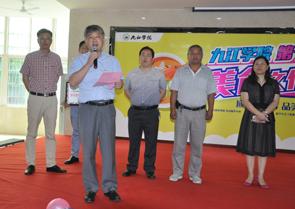

2018-06-09 18:49 饮食服务中心 (点击： 677)
6月9日上午9:00，主题为“应九院之约，品美食盛会”九江学院第十四届美食文化节在学生三食堂隆重开幕。副校长夏启国、濂溪区市场监督局局长曹亮及学生处、校团委、后勤管理处相关负责人出席开幕式。我校教师代表、学生代表、学生会、新媒体、膳食管理委员会等学生社团共计500余人参加开幕式。
美食文化节在后勤管理处勤韵舞蹈队带来的舞蹈表演《泼茶香》中拉开帷幕。姜处长首先代表后勤管理处介绍参会领导和美食节总体策划筹备情况。接下来，曹局长给荣获“全国优秀早餐企业”的白案配送中心颁奖授牌，夏副校长为荣获“全国百家好食堂”的学生三食堂颁奖授牌。

授牌仪式后，夏启国副校长代表学校致辞。他表示一年一度的美食文化节是我校精品校园文化的浓缩，是师生魅力全面展示的平台；是我校后勤饮食部门“以生为本”服务理念的科学诠释，是搭建民族饮食文化交流平台的切实行动，是彰显科学健康饮食文化、推进和谐文明校园建设的重要举措。近年来在全校师生大力支持配合下，后勤管理处取得一系列成绩，荣获“全国高校伙食工作先进集体”、“全国优秀早餐企业”、“中国百家好食堂”、“全国教育后勤系统信息宣传工作先进单位”、“全国教育后勤新科技应用领跑单位”等荣誉，希望以本届美食文化节为新的起点，全校师生员工携起手来、同心同德，坚持“以生为本、规范管理”，弘扬饮食文化，倾情服务师生。最后，夏副校长宣布九江学院第十四届校园美食文化节开幕。
开幕式后，领导和师生共同参加了美食展评活动。活动现场，百余道菜品琳琅满目，令在场参观的师生无不感慨唯美食不可辜负。食堂大厨们也在现场展示精湛厨艺：红案厨艺展示、清真拉面制作、西点制作、现场雕刻作品等。誓做生活达人的新潮学生们也带来了美食DIY、咖啡饮品制作、茶艺表演、鸡尾酒调制等现场秀。舞台上伴之街舞、乐队与现场多媒体互动抽奖、游戏活动等精彩节目，现场氛围推到了新的高度，无不体现了我校师生对美好生活的向往与追求。
本次活动主办单位饮食服务中心蔡飞主任表示：每年的校园美食节已成为我校师生饮食文化活动的亮点与高潮，本届美食节已有江西教育电视台、江西网络电视台、九江电视台、濂溪区电视台、九江交通音乐台等众多媒体采访报道，九江电视台第一播报栏目还进行了全程微博视频直播。美食文化节既让师生不出校园就能品尝到安全美味食品，今后九院后勤人将共同努力，不断追求创新，用心优质服务，为构建和谐、安全、优质、特色校园饮食贡献自己更大的智慧与力量


学校地址：江西省九江市前进东路551号 邮政编码：332005 招生电话：0792-8310030 8310031 Email：jjuxb@jju.edu.cn
Copyright 2013 九江学院版权所有 备案序号：赣ICP备10004574号